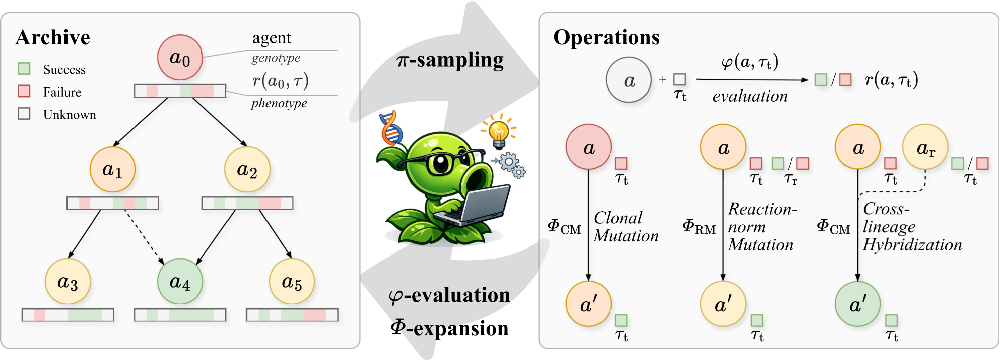
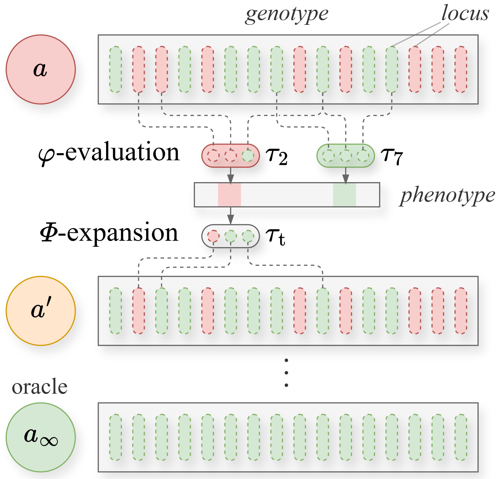

Mendel Gödel Machine: Comparative Evolution for Self-Improving Coding Agents
TL;DR
- "Mendel Gödel Machine: Recursive Self-Improving Coding Agents via Comparative Evolution" (arXiv 2608.07645; Changzhi Liu, Yilun Liu, Sikuan Yan, Volker Tresp, Yunpu Ma — the thread attributes the group to LMU Munich, consistent with Tresp/Ma's lab, but the arXiv HTML doesn't render affiliations (inferred from the thread — verify in the paper)) attacks the one part of the Gödel-machine loop nobody had touched: the self-modification step itself. DGM/HGM condition every self-edit on a single failure trajectory; MGM partitions the mutation operator into three — clonal mutation \(\varPhi_{\mathrm{CM}}\) (the old single-trajectory edit), reaction-norm mutation \(\varPhi_{\mathrm{RM}}\) (same agent compared across multiple tasks), and cross-lineage hybridization \(\varPhi_{\mathrm{CH}}\) (two lineages compared on the same task).
- Under an identical budget of 200 evaluations + 24 expansions with Qwen3.6-35B-A3B, MGM lifts SWE-bench Verified-60 from 68.3% → 78.3% (+10.0pp; HGM manages +5.0) and Polyglot-60 from 50.8% → 93.2% (+42.4pp; HGM +27.1) — the tweet's "+10% / +42%" checks out as percentage points. On full Polyglot-225 the evolved scaffold hits 93.3%, and 96.9% when frozen and re-run on DeepSeek-V4-Pro.
- The generalization tables are the real story: Polyglot-evolved scaffolds transfer to SWE-bench Pro at 16.7% → 26.7% where HGM's regresses to 13.3%, and Qwen-evolved scaffolds average 70.8% across two DeepSeek backbones (HGM 65.0, seed 47.5). A theory section (additive fitness landscape) proves comparative evidence strictly raises the per-edit fix probability.
Why this matters
The Gödel-machine line has iterated hard on the archive: DGM added open-ended evolution over a tree of agent variants; HGM added clade-level Thompson sampling so expansion follows descendants' aggregate productivity rather than a node's own score. But in all of them, the actual edit — the moment the agent rewrites its own source — is conditioned on one agent's one trajectory on one task, typically the latest failure. That is exactly the regime where self-modification degenerates into task-specific patching: a single failure can't distinguish a systematic weakness from an accidental one, so the editor happily hard-codes around the instance in front of it. Every recent critique in this tracker — HarnessCompass's search-task overfitting diagnosis, the "Rethinking Harness Evolution" repeated-sampling argument — lands on this weakness. MGM's move is the classic statistician's one: don't debug from a single observation; construct a controlled comparison. Same genotype across environments isolates genuine weaknesses; different genotypes on the same environment isolates the trait that made one succeed. The archive already contains all this evidence for free — MGM just stops using it as a mere leaderboard.
The core idea
An agent \(a\) plus scaffolding is the genotype; running it on task \(\tau\) yields trajectory \(\varphi(a,\tau)\) and binary outcome \(r(a,\tau)\in\{0,1\}\) — the phenotype — with utility \(U(a)=\mathbb{E}_{\tau\sim\mathcal{D}}[r(a,\tau)]\). Self-modification is \(a'\leftarrow\varPhi(a,E)\) where \(E\) is a set of stored trajectory–outcome pairs. MGM keeps HGM's fixed-budget tree search wholesale: each step either evaluates or expands, with node- and clade-level Beta posteriors
where \(n_{\mathrm{s}},n_{\mathrm{f}}\) are a node's success/failure counts, the \(C\) superscript sums them over the node's subtree (clade), and \(\kappa>0\) controls exploration; evaluation samples from \(\pi_a\), expansion from \(\pi_a^C\). The novelty is what happens inside an expansion.

Figure 1 from the paper: the archive (left) stores each agent's code and per-task outcomes; the loop (center) alternates \(\varphi\)-evaluation and \(\varPhi\)-expansion; the three self-modification operators (right) differ only in the comparative evidence handed to the editor.
Reaction-norm mutation (a reaction norm is how one genotype expresses different phenotypes across environments) fires once an agent has \(|S_i|\ge m_{\mathrm{RM}}\) evaluated tasks; the editor gets a pair of its own trajectories — a failed target \(\tau_{\mathrm{t}}\) plus a reference \(\tau_{\mathrm{r}}\), preferably also failed:
and is instructed to find a recurring or contrastive behavioral pattern and fix that, not the instance. Cross-lineage hybridization is available when two lineages share an attempted task that isn't solved by both:
If exactly one solved it, the failing agent is edited with the winner's trajectory as reference (the child attaches to the failing lineage); if both failed, the higher-utility lineage leads and the other supplies contrastive context. Crucially, MGM never splices source files — the target agent is asked to extract a transferable behavioral trait from the reference trajectory and re-implement it in its own codebase, which is why the paper frames this as Mendelian controlled inheritance rather than genetic crossover. A global failure pool \(\mathcal{P}_t=\bigcup_i F_i\) reweights task sampling toward failure-revealing tasks (weight \(\beta_{\mathrm{fail}}\)), deliberately creating the cross-lineage task overlap \(\varPhi_{\mathrm{CH}}\) needs.

Figure 2 from the paper: the surrogate model behind Proposition 1 — genotypes are binary locus strings, tasks probe subsets of loci, and self-improvement is reduction of Hamming distance to an oracle \(a_\infty\).
The theory formalizes why comparison helps: model agents as binary genotypes where task \(\tau\) succeeds iff its required loci contain no defects. Clonal mutation must search all of \(\tau_{\mathrm{t}}\)'s required loci; reaction-norm mutation narrows candidates to the intersection of two failed tasks' loci; hybridization filters contrastively against the reference. With effective fix probability \(p_{f}^{\sigma}=s\cdot\Pr_{\ell\sim C_{\sigma}(E)}[\ell\in M(a)]\) (probability a sampled candidate locus is genuinely defective, times edit success rate \(s\)), Proposition 1 gives
— comparative evidence doesn't make the editor stronger, it shrinks and cleans the defect-candidate set ("diagnostic compression"). Monte Carlo simulations sweeping initial defect count \(d_0\in\{10,20,40,80\}\) and advantage ratio \(\rho\in\{1.0,\dots,2.0\}\) show MGM beating DGM- and HGM-style baselines in convergence speed, final distance, and across-seed variance whenever \(\rho>1\).
How it works
# Mendel Gödel Machine (Algorithm 1 + Sec. 3.2, compressed)
evaluate ancestor a0 on benchmark B; archive A <- {(a0, r(a0,·))}; failure pool P <- {}
for t = 1..T: # real runs: 200 evaluations + 24 expansions
u <- ThompsonPolicy(A) # evaluate vs expand (expand when N_t^alpha >= |V_t|)
if u == expand:
a_i <- SelectParent(A) # clade-level Beta posterior (HGM machinery)
Omega <- EligibleOps(a_i, A) # CM: F_i nonempty | RM: |S_i| >= m_RM, a failure
# among two tasks | CH: another lineage shares
# an unsolved task
sigma ~ lambda_sigma / sum(lambda) # lam_CM=0.10, lam_RM=0.45, lam_CH=0.45
E <- BuildEvidence(sigma):
CM: one failed trajectory of a_i
RM: a_i's trajectories on target + reference task (both failed if possible)
CH: target & reference agents' trajectories on the shared task;
if exactly one solved it, edit the loser with the winner as donor
child <- Edit_sigma(target, E) # agent rewrites its own code; no file splicing
if child.is_valid(): A <- A + {child}
else: # evaluate
a <- SelectAgent(A); tau <- SelectTask(a, B, P, beta_fail) # unattempted tasks;
r <- evaluate(a, tau); update A # pool tasks x beta_fail
if r == 0: P <- P + {tau}
return best-belief agent in A
All comparative evidence comes from trajectories the archive already collected, so MGM spends zero extra evaluations versus HGM — the informativeness per expansion goes up, not the budget. Operator weights heavily favor the comparative operators (\(\lambda_{\mathrm{RM}}=\lambda_{\mathrm{CH}}=0.45\) vs \(\lambda_{\mathrm{CM}}=0.10\); \(m_{\mathrm{RM}}=2\)). Agents never see private test cases or test results during evolution; the loop consumes only binary outcomes. Token-cost analysis shows all operators cost the same order of magnitude, and wall-clock is comparable (Polyglot-60: MGM 40.1h vs HGM 44.2h; SWE-bench: 96.1h vs 93.0h, on 8×H100).
Results
- Matched-budget headline (Table 1, Qwen3.6-35B-A3B, 200 evals + 24 expansions, same ancestor): SWE-bench Verified-60 68.3 → 78.3 (MGM) vs 73.3 (HGM); Polyglot-60 50.8 → 93.2 vs 77.9. Average relative improvement +44.0% vs HGM's +26.8%. Since budgets are identical, the gap can't be a bigger-search effect.
- Full Polyglot-225: the evolved scaffold reaches 93.3% — the paper notes this surpasses GPT-5 with ~117× fewer parameters — and 96.89% when the frozen scaffold is re-run with DeepSeek-V4-Pro as backbone.
- Cross-benchmark transfer (evolve on Polyglot-60, freeze, zero-shot): SWE-bench Pro 16.7 → 26.7 for MGM while HGM drops to 13.3 (−3.4pp); SWE-bench Multilingual 41.7 → 55.0 vs HGM's 43.3. Single-trajectory evolution overfit its search distribution; comparative evolution didn't.
- Cross-model transfer (evolve on SWE-bench Verified-60 with Qwen, swap backbone): DeepSeek-V4-Flash 50.0 → 66.7 (HGM 60.0); DeepSeek-V4-Pro 45.0 → 75.0 (HGM 70.0); transferred average 70.8 vs 65.0 vs seed 47.5.
- Ablation (Polyglot-60, same budget): full MGM 93.2; without \(\varPhi_{\mathrm{RM}}\) 79.7; without \(\varPhi_{\mathrm{CH}}\) 74.6 — hybridization is the bigger contributor, consistent with it being the only channel through which lineages share discoveries. A semantic map of evolved skills (Appendix F.3) shows MGM's edits clustering tightly around one reusable workflow — extract the test/API contract, implement against it, verify exact agreement before finalizing — where HGM's edits scatter across fragmented interventions.
How it connects
- Darwin Gödel Machine (Zhang et al. 2025, arXiv 2505.22954) and Huxley-Gödel Machine (arXiv 2510.21614) are the direct ancestors: DGM contributed the open-ended archive, HGM the clade-level Thompson sampling that MGM inherits verbatim. MGM's framing is sharp — those papers optimized which agent to edit next; the edit itself stayed a single-failure patch. MGM is the first of the line to upgrade the mutation operator.
- [Co-Evolving Evaluation Criteria (Cambridge/NVIDIA)] — the Red Queen Gödel Machine (arXiv 2606.26294) — evolves the evaluator alongside the agent; MGM evolves the evidence behind each edit. Orthogonal levers on the same loop, and plausibly stackable: comparative mutation against co-evolving criteria.
- [HarnessCompass] (harnesscompass-guided-evolution, arXiv 2608.01918) fights the same enemy — blind, overfit self-modification — with the opposite mechanism: an admissibility gate on what edits may contain, versus MGM's better diagnosis of what to edit. HGM's −3.4pp regression on SWE-bench Pro is exactly the search-task overfitting HarnessCompass documented; notably, both papers converge on transfer (cross-benchmark, cross-model) as the success criterion that matters.
- [Rethinking Harness Evolution] (added to the tracker today) argues automatic harness-evolution gains largely come from repeated sampling with limited generalization. MGM partially answers: the MGM-vs-HGM gap survives strictly matched budgets and comparable token costs, so that delta isn't sampling; and the cross-benchmark/cross-model tables show genuine transfer. What MGM doesn't rule out is that a chunk of the absolute gain over the seed (both methods') is still sampling-flavored — the headline 78.3/93.2 are best-of-archive numbers on the same 60 tasks the search optimized.
- The [Self-Evolving Coding Agents survey] (self-evolving-coding-agents, arXiv 2608.03392) flagged overfitting and generalization as the field's open wound; MGM's Table 2 (HGM negative transfer, MGM positive) is the cleanest single piece of evidence yet for the survey's claim that evidence quality, not search intensity, is the bottleneck.
- [Self-Improving Agents Should Evolve Their Benchmarks] (evolving-benchmarks): MGM's global failure pool is a whisper of the same idea — bias evaluation toward tasks that expose weaknesses — though implemented as reweighting a fixed task set rather than generating new tasks.
Critical take
The headline numbers are search-set numbers: evolution and the reported accuracy use the same 60-task subsets, so 78.3%/93.2% measure how well the archive optimized its own benchmark — the honest evidence is Tables 2–3, where the margins are healthy but smaller. Reporting is single-run: the authors themselves acknowledge cost "constrains the number of independent evolution seeds," so the real-benchmark deltas carry no error bars (the CIs live only in the surrogate simulation, where the comparative advantage \(\rho\) is assumed, not measured — the theory proves comparison helps if trajectory comparison actually compresses diagnosis for an LLM editor, which is precisely the empirical question). "Comparative evolution" is also less sweeping than the abstract's "rich comparative signals in the expanding archive" suggests: every evidence set is a pair of trajectories (\(m_{\mathrm{RM}}=2\)), not archive-wide statistics. Oddly, the failed-pool boost is configured to \(\beta_{\mathrm{fail}}=1.0\) (Table 5) — i.e., the mechanism sold as concentrating evaluation on failure-revealing tasks is neutral as run, and cross-lineage overlap arises mostly by chance; either the mechanism is unnecessary or untuned. Evolution uses one backbone (Qwen3.6-35B-A3B), and both transfer targets are DeepSeek models evaluated weaker-to-stronger — the easy direction. Finally, ~96 H100-hours per SWE-bench run for +5pp over HGM is real money, and the 93.3%-Polyglot-beats-GPT-5 flex should be read with Polyglot's saturation and contamination risk in mind. None of this undercuts the core result — under matched budgets, two-trajectory evidence beats one-trajectory evidence, and the ablation says lineage-crossing evidence matters most — but the definitive experiment (does comparative signal beat spending the same tokens on more single-trajectory attempts from a stronger seed?) is the one "Rethinking Harness Evolution" would demand, and it isn't here.
If you remember three things
- Upgrade the edit, not just the search: keeping HGM's archive and Thompson sampling fixed and only enriching each self-modification's evidence — same-agent-across-tasks (\(\varPhi_{\mathrm{RM}}\)) and cross-lineage-same-task (\(\varPhi_{\mathrm{CH}}\)) pairs — turns +5.0pp into +10.0pp on SWE-bench Verified-60 and +27.1pp into +42.4pp on Polyglot-60 under identical 200-evaluation budgets.
- Comparison is diagnostic compression: two failed trajectories intersect the candidate-defect set, a success/failure contrast filters it — provably raising per-edit fix probability under an additive fitness landscape, with no extra evaluations spent.
- Transfer separates the methods: single-trajectory HGM loses 3.4pp when its Polyglot-evolved scaffold meets SWE-bench Pro; MGM gains 10.0pp there, averages 70.8% across unseen DeepSeek backbones, and its evolved skills cluster around one reusable contract-extraction workflow — the strongest evidence yet that comparative evidence yields general engineering, not benchmark memorization.